01 · 数学、概率与坐标变换 基础讲义 · 2026-10-12 · 本地公式与矢量图 · 点击图示放大
CONTENTS · 本页目录 1. 符号与维数 2. 最小二乘：从观测模型到正规方程 3. KL：方向、非负性与高斯闭式 4. SE(3)：把坐标链写正确 5. 投影、反投影与误差传播 6. VAE：从似然到 ELBO 和可微采样 7. 使用步骤与排错
阅读目标：从最小二乘和概率分布出发，掌握 KL、ELBO、刚体变换和相机投影。约定实向量为列向量，正文中 token 特征按行存放；所有 log 均为自然对数。
1. 符号与维数
符号
含义
维数 / 条件
x , A , b x,A,b x , A , b 未知量、设计矩阵、测量
x ∈ R n , A ∈ R m × n , b ∈ R m x\in\mathbb R^n,A\in\mathbb R^{m\times n},b\in\mathbb R^m x ∈ R n , A ∈ R m × n , b ∈ R m
∥ x ∥ 2 , tr , det \|x\|_2,\operatorname{tr},\det ∥ x ∥ 2 , tr , det 欧氏范数、迹、行列式
∥ x ∥ 2 = x ⊤ x \|x\|_2=\sqrt{x^\top x} ∥ x ∥ 2 = x ⊤ x
μ , Σ \mu,\Sigma μ , Σ 均值、协方差
Σ ⪰ 0 \Sigma\succeq0 Σ ⪰ 0
p , q , E q p,q,\mathbb E_q p , q , E q 密度 / 质量、按 q 求期望
积分或离散求和
A T B {}^AT_B A T B 把 B 系坐标转换到 A 系
4 × 4 4\times4 4 × 4
W , B , E , C , O W,B,E,C,O W , B , E , C , O 世界、基座、末端、相机、物体坐标系
右手坐标；长度用 m，角度用 rad
K , f x , f y , c x , c y K,f_x,f_y,c_x,c_y K , f x , f y , c x , c y 内参、像素焦距、主点
焦距和主点用 pixel
z , θ , ϕ z,\theta,\phi z , θ , ϕ 潜变量、生成参数、推断参数
与深度 Z Z Z
2. 最小二乘：从观测模型到正规方程
设 b = A x + ϵ b=Ax+\epsilon b = A x + ϵ
x ∗ = arg min x ∥ A x − b ∥ 2 2 . (1.1) x^*=\arg\min_x\|Ax-b\|_2^2.\tag{1.1} x ∗ = arg x min ∥ A x − b ∥ 2 2 . ( 1.1 ) LaTeX 源码 x^*=\arg\min_x\|Ax-b\|_2^2.\tag{1.1} 推导 1 · 展开、求导、秩与数值实现
J ( x ) = ( A x − b ) ⊤ ( A x − b ) = x ⊤ A ⊤ A x − 2 b ⊤ A x + b ⊤ b , ∇ x J = 2 A ⊤ A x − 2 A ⊤ b = 0 , A ⊤ A x = A ⊤ b . (1.2) \begin{aligned}
J(x)&=(Ax-b)^\top(Ax-b)\\
&=x^\top A^\top Ax-2b^\top Ax+b^\top b,\\
\nabla_xJ&=2A^\top Ax-2A^\top b=0,\\
A^\top Ax&=A^\top b.
\end{aligned}\tag{1.2} J ( x ) ∇ x J A ⊤ A x = ( A x − b ) ⊤ ( A x − b ) = x ⊤ A ⊤ A x − 2 b ⊤ A x + b ⊤ b , = 2 A ⊤ A x − 2 A ⊤ b = 0 , = A ⊤ b . ( 1.2 ) LaTeX 源码 \begin{aligned}
J(x)&=(Ax-b)^\top(Ax-b)\\
&=x^\top A^\top Ax-2b^\top Ax+b^\top b,\\
\nabla_xJ&=2A^\top Ax-2A^\top b=0,\\
A^\top Ax&=A^\top b.
\end{aligned}\tag{1.2} 当 A 满列秩时解唯一。写成 ( A ⊤ A ) − 1 A ⊤ b (A^\top A)^{-1}A^\top b ( A ⊤ A ) − 1 A ⊤ b κ ( A ⊤ A ) = κ ( A ) 2 \kappa(A^\top A)=\kappa(A)^2 κ ( A ⊤ A ) = κ ( A ) 2
若 ϵ ∼ N ( 0 , R ) \epsilon\sim\mathcal N(0,R) ϵ ∼ N ( 0 , R )
J R = ( A x − b ) ⊤ R − 1 ( A x − b ) , A ⊤ R − 1 A x = A ⊤ R − 1 b . (1.3) J_R=(Ax-b)^\top R^{-1}(Ax-b),\qquad A^\top R^{-1}Ax=A^\top R^{-1}b.\tag{1.3} J R = ( A x − b ) ⊤ R − 1 ( A x − b ) , A ⊤ R − 1 A x = A ⊤ R − 1 b . ( 1.3 ) LaTeX 源码 J_R=(Ax-b)^\top R^{-1}(Ax-b),\qquad A^\top R^{-1}Ax=A^\top R^{-1}b.\tag{1.3} 加岭正则 λ ∥ x ∥ 2 \lambda\|x\|^2 λ ∥ x ∥ 2 ( A ⊤ R − 1 A + λ I ) x (A^\top R^{-1}A+\lambda I)x ( A ⊤ R − 1 A + λ I ) x R − 1 R^{-1} R − 1
3. KL：方向、非负性与高斯闭式
D K L ( q ∥ p ) = ∫ q ( x ) log q ( x ) p ( x ) d x = H ( q , p ) − H ( q ) . (1.4) D_{\mathrm{KL}}(q\|p)=\int q(x)\log\frac{q(x)}{p(x)}\,dx=H(q,p)-H(q).\tag{1.4} D KL ( q ∥ p ) = ∫ q ( x ) log p ( x ) q ( x ) d x = H ( q , p ) − H ( q ) . ( 1.4 ) LaTeX 源码 D_{\mathrm{KL}}(q\|p)=\int q(x)\log\frac{q(x)}{p(x)}\,dx=H(q,p)-H(q).\tag{1.4} 离散情况把积分换为求和。q 必须对 p 绝对连续，否则 KL 可能无穷大。KL 不对称，也不满足距离的三角不等式。最小化固定标签分布到预测分布的 KL 等价于最小化交叉熵。
推导 2 · Jensen 非负性、方向差异与高斯积分
对于 q 的支撑上的正密度，Jensen 给出：
− D K L ( q ∥ p ) = E q log p q ≤ log E q p q ≤ log 1 = 0. (1.5) -D_{\mathrm{KL}}(q\|p)=\mathbb E_q\log\frac p q\leq\log\mathbb E_q\frac p q\leq\log1=0.\tag{1.5} − D KL ( q ∥ p ) = E q log q p ≤ log E q q p ≤ log 1 = 0. ( 1.5 ) LaTeX 源码 -D_{\mathrm{KL}}(q\|p)=\mathbb E_q\log\frac p q\leq\log\mathbb E_q\frac p q\leq\log1=0.\tag{1.5} 第二个不等式考虑 p 在 q 支撑以外仍可能有质量；两分布几乎处处相等时等号成立。例 q = ( 0.8 , 0.2 ) , p = ( 0.5 , 0.5 ) q=(0.8,0.2),p=(0.5,0.5) q = ( 0.8 , 0.2 ) , p = ( 0.5 , 0.5 ) D ( q ∥ p ) ≈ 0.193 D(q\|p)\approx0.193 D ( q ∥ p ) ≈ 0.193 D ( p ∥ q ) ≈ 0.223 D(p\|q)\approx0.223 D ( p ∥ q ) ≈ 0.223
令 q = N ( μ 0 , Σ 0 ) , p = N ( μ 1 , Σ 1 ) q=\mathcal N(\mu_0,\Sigma_0),p=\mathcal N(\mu_1,\Sigma_1) q = N ( μ 0 , Σ 0 ) , p = N ( μ 1 , Σ 1 )
log q p = 1 2 [ log ∣ Σ 1 ∣ ∣ Σ 0 ∣ + ( x − μ 1 ) ⊤ Σ 1 − 1 ( x − μ 1 ) − ( x − μ 0 ) ⊤ Σ 0 − 1 ( x − μ 0 ) ] . (1.6) \log\frac q p=\frac12\left[\log\frac{|\Sigma_1|}{|\Sigma_0|}+(x-\mu_1)^\top\Sigma_1^{-1}(x-\mu_1)-(x-\mu_0)^\top\Sigma_0^{-1}(x-\mu_0)\right].\tag{1.6} log p q = 2 1 [ log ∣ Σ 0 ∣ ∣ Σ 1 ∣ + ( x − μ 1 ) ⊤ Σ 1 − 1 ( x − μ 1 ) − ( x − μ 0 ) ⊤ Σ 0 − 1 ( x − μ 0 ) ] . ( 1.6 ) LaTeX 源码 \log\frac q p=\frac12\left[\log\frac{|\Sigma_1|}{|\Sigma_0|}+(x-\mu_1)^\top\Sigma_1^{-1}(x-\mu_1)-(x-\mu_0)^\top\Sigma_0^{-1}(x-\mu_0)\right].\tag{1.6} 用 E [ ( x − μ 0 ) ( x − μ 0 ) ⊤ ] = Σ 0 \mathbb E[(x-\mu_0)(x-\mu_0)^\top]=\Sigma_0 E [( x − μ 0 ) ( x − μ 0 ) ⊤ ] = Σ 0
E q [ ( x − μ 1 ) ⊤ Σ 1 − 1 ( x − μ 1 ) ] = tr ( Σ 1 − 1 Σ 0 ) + ( μ 0 − μ 1 ) ⊤ Σ 1 − 1 ( μ 0 − μ 1 ) , E q [ ( x − μ 0 ) ⊤ Σ 0 − 1 ( x − μ 0 ) ] = d . \begin{aligned}
\mathbb E_q[(x-\mu_1)^\top\Sigma_1^{-1}(x-\mu_1)]&=\operatorname{tr}(\Sigma_1^{-1}\Sigma_0)+(\mu_0-\mu_1)^\top\Sigma_1^{-1}(\mu_0-\mu_1),\\
\mathbb E_q[(x-\mu_0)^\top\Sigma_0^{-1}(x-\mu_0)]&=d.
\end{aligned} E q [( x − μ 1 ) ⊤ Σ 1 − 1 ( x − μ 1 )] E q [( x − μ 0 ) ⊤ Σ 0 − 1 ( x − μ 0 )] = tr ( Σ 1 − 1 Σ 0 ) + ( μ 0 − μ 1 ) ⊤ Σ 1 − 1 ( μ 0 − μ 1 ) , = d . LaTeX 源码 \begin{aligned}
\mathbb E_q[(x-\mu_1)^\top\Sigma_1^{-1}(x-\mu_1)]&=\operatorname{tr}(\Sigma_1^{-1}\Sigma_0)+(\mu_0-\mu_1)^\top\Sigma_1^{-1}(\mu_0-\mu_1),\\
\mathbb E_q[(x-\mu_0)^\top\Sigma_0^{-1}(x-\mu_0)]&=d.
\end{aligned} 代回得到：
D ( q ∥ p ) = 1 2 [ tr ( Σ 1 − 1 Σ 0 ) + ( μ 1 − μ 0 ) ⊤ Σ 1 − 1 ( μ 1 − μ 0 ) − d + log ∣ Σ 1 ∣ ∣ Σ 0 ∣ ] . (1.7) \boxed{D(q\|p)=\frac12\left[\operatorname{tr}(\Sigma_1^{-1}\Sigma_0)+(\mu_1-\mu_0)^\top\Sigma_1^{-1}(\mu_1-\mu_0)-d+\log\frac{|\Sigma_1|}{|\Sigma_0|}\right].}\tag{1.7} D ( q ∥ p ) = 2 1 [ tr ( Σ 1 − 1 Σ 0 ) + ( μ 1 − μ 0 ) ⊤ Σ 1 − 1 ( μ 1 − μ 0 ) − d + log ∣ Σ 0 ∣ ∣ Σ 1 ∣ ] . ( 1.7 ) LaTeX 源码 \boxed{D(q\|p)=\frac12\left[\operatorname{tr}(\Sigma_1^{-1}\Sigma_0)+(\mu_1-\mu_0)^\top\Sigma_1^{-1}(\mu_1-\mu_0)-d+\log\frac{|\Sigma_1|}{|\Sigma_0|}\right].}\tag{1.7} 四项分别量化协方差形状、均值偏离、维度常数、体积比。标准正态先验与对角 q 可简化为第 6 节的逐维式。
4. SE(3)：把坐标链写正确
T = [ R t 0 ⊤ 1 ] , R ⊤ R = I , det R = 1 , A p = A T B B p . (1.8) T=\begin{bmatrix}R&t\\0^\top&1\end{bmatrix},\quad R^\top R=I,\quad\det R=1,\quad {}^Ap={}^AT_B{}^Bp.\tag{1.8} T = [ R 0 ⊤ t 1 ] , R ⊤ R = I , det R = 1 , A p = A T B B p . ( 1.8 ) LaTeX 源码 T=\begin{bmatrix}R&t\\0^\top&1\end{bmatrix},\quad R^\top R=I,\quad\det R=1,\quad {}^Ap={}^AT_B{}^Bp.\tag{1.8} 点的齐次末项为 1；方向向量末项为 0，不受平移影响。四元数要归一化；欧拉角有万向节锁，旋转相乘不可交换。
图 01.1 · 箭头表示信息 / 计算流程；具体输入、变量与假设见本节说明。 查看 Mermaid 图源码 flowchart LR
C[相机点 p_C] -->|末端到相机外参 T_EC| E[末端系 p_E]
E -->|机器人正运动学 T_BE| B[基座系 p_B]
B -->|基座定位 T_WB| W[世界系 p_W] 推导 3 · 复合变换和求逆
A T C = A T B B T C , [ R 1 t 1 0 1 ] [ R 2 t 2 0 1 ] = [ R 1 R 2 R 1 t 2 + t 1 0 1 ] , T − 1 = [ R ⊤ − R ⊤ t 0 1 ] . (1.9) \begin{aligned}
{}^AT_C&={}^AT_B{}^BT_C,\\
\begin{bmatrix}R_1&t_1\\0&1\end{bmatrix}\begin{bmatrix}R_2&t_2\\0&1\end{bmatrix}&=\begin{bmatrix}R_1R_2&R_1t_2+t_1\\0&1\end{bmatrix},\\
T^{-1}&=\begin{bmatrix}R^\top&-R^\top t\\0&1\end{bmatrix}.
\end{aligned}\tag{1.9} A T C [ R 1 0 t 1 1 ] [ R 2 0 t 2 1 ] T − 1 = A T B B T C , = [ R 1 R 2 0 R 1 t 2 + t 1 1 ] , = [ R ⊤ 0 − R ⊤ t 1 ] . ( 1.9 ) LaTeX 源码 \begin{aligned}
{}^AT_C&={}^AT_B{}^BT_C,\\
\begin{bmatrix}R_1&t_1\\0&1\end{bmatrix}\begin{bmatrix}R_2&t_2\\0&1\end{bmatrix}&=\begin{bmatrix}R_1R_2&R_1t_2+t_1\\0&1\end{bmatrix},\\
T^{-1}&=\begin{bmatrix}R^\top&-R^\top t\\0&1\end{bmatrix}.
\end{aligned}\tag{1.9} 最后一式由 p A = R p B + t p_A=Rp_B+t p A = R p B + t R ⊤ R^\top R ⊤ W T C = W T B B T E E T C {}^WT_C={}^WT_B{}^BT_E{}^ET_C W T C = W T B B T E E T C C T E {}^CT_E C T E
5. 投影、反投影与误差传播
相似三角形给出归一化像面 ( X / Z , Y / Z ) (X/Z,Y/Z) ( X / Z , Y / Z )
K = [ f x 0 c x 0 f y c y 0 0 1 ] , [ u v 1 ] = 1 Z K [ X Y Z ] , P C = Z K − 1 [ u v 1 ] . (1.10) K=\begin{bmatrix}f_x&0&c_x\\0&f_y&c_y\\0&0&1\end{bmatrix},\quad\begin{bmatrix}u\\v\\1\end{bmatrix}=\frac1ZK\begin{bmatrix}X\\Y\\Z\end{bmatrix},\quad P_C=ZK^{-1}\begin{bmatrix}u\\v\\1\end{bmatrix}.\tag{1.10} K = f x 0 0 0 f y 0 c x c y 1 , u v 1 = Z 1 K X Y Z , P C = Z K − 1 u v 1 . ( 1.10 ) LaTeX 源码 K=\begin{bmatrix}f_x&0&c_x\\0&f_y&c_y\\0&0&1\end{bmatrix},\quad\begin{bmatrix}u\\v\\1\end{bmatrix}=\frac1ZK\begin{bmatrix}X\\Y\\Z\end{bmatrix},\quad P_C=ZK^{-1}\begin{bmatrix}u\\v\\1\end{bmatrix}.\tag{1.10} 只有像素能确定射线，结合深度才确定点。深度设备若返回欧氏距离而非光轴 Z，需先转换。
推导 4 · 雅可比传播与数值例子
f ( x ) ≈ f ( μ x ) + J f ( x − μ x ) , Σ y ≈ J f Σ x J f ⊤ . (1.11) f(x)\approx f(\mu_x)+J_f(x-\mu_x),\qquad\Sigma_y\approx J_f\Sigma_xJ_f^\top.\tag{1.11} f ( x ) ≈ f ( μ x ) + J f ( x − μ x ) , Σ y ≈ J f Σ x J f ⊤ . ( 1.11 ) LaTeX 源码 f(x)\approx f(\mu_x)+J_f(x-\mu_x),\qquad\Sigma_y\approx J_f\Sigma_xJ_f^\top.\tag{1.11} 因为中心化后的输出近似为输入扰动的线性映射，取外积期望即得该式。若输出另有独立噪声，加其协方差；存在相关性时还要保留交叉项。
双目 Z = f B / d Z=fB/d Z = f B / d ∂ Z / ∂ d = − f B / d 2 \partial Z/\partial d=-fB/d^2 ∂ Z / ∂ d = − f B / d 2 σ Z ≈ ( f B / d 2 ) σ d \sigma_Z\approx(fB/d^2)\sigma_d σ Z ≈ ( f B / d 2 ) σ d f = 600 f=600 f = 600 B = 0.1 B=0.1 B = 0.1 d = 30 d=30 d = 30 σ d = 0.5 \sigma_d=0.5 σ d = 0.5 Z = 2 Z=2 Z = 2 σ Z ≈ 0.033 \sigma_Z\approx0.033 σ Z ≈ 0.033
一阶近似适合小噪声；多峰定位、强非线性和大旋转不宜用单高斯概括。
6. VAE：从似然到 ELBO 和可微采样
生成模型 p θ ( x , z ) = p θ ( x ∣ z ) p ( z ) p_\theta(x,z)=p_\theta(x|z)p(z) p θ ( x , z ) = p θ ( x ∣ z ) p ( z ) q ϕ ( z ∣ x ) q_\phi(z|x) q ϕ ( z ∣ x )

图 01.2 · 箭头表示信息 / 计算流程；具体输入、变量与假设见本节说明。 查看 Mermaid 图源码 flowchart LR
X[数据 x] --> E[编码器 q_phi]
E --> M[均值 mu / 对数方差]
N[标准高斯 epsilon] --> S[重参数化 z]
M --> S
S --> D[解码器 p_theta]
D --> R[重建负对数似然]
M --> K[与先验的 KL]
R --> L[相加得到负 ELBO]
K --> L 推导 5 · 下界、等价分解和重参数化
log p θ ( x ) = log E q ϕ p θ ( x , z ) q ϕ ( z ∣ x ) ≥ E q [ log p θ ( x , z ) − log q ϕ ( z ∣ x ) ] = E q log p θ ( x ∣ z ) − D K L ( q ϕ ( z ∣ x ) ∥ p ( z ) ) ⏟ L E L B O . (1.12) \begin{aligned}
\log p_\theta(x)&=\log\mathbb E_{q_\phi}\frac{p_\theta(x,z)}{q_\phi(z|x)}\\
&\geq\mathbb E_q\big[\log p_\theta(x,z)-\log q_\phi(z|x)\big]\\
&=\underbrace{\mathbb E_q\log p_\theta(x|z)-D_{\mathrm{KL}}(q_\phi(z|x)\|p(z))}_{\mathcal L_{\mathrm{ELBO}}}.
\end{aligned}\tag{1.12} log p θ ( x ) = log E q ϕ q ϕ ( z ∣ x ) p θ ( x , z ) ≥ E q [ log p θ ( x , z ) − log q ϕ ( z ∣ x ) ] = L ELBO E q log p θ ( x ∣ z ) − D KL ( q ϕ ( z ∣ x ) ∥ p ( z )) . ( 1.12 ) LaTeX 源码 \begin{aligned}
\log p_\theta(x)&=\log\mathbb E_{q_\phi}\frac{p_\theta(x,z)}{q_\phi(z|x)}\\
&\geq\mathbb E_q\big[\log p_\theta(x,z)-\log q_\phi(z|x)\big]\\
&=\underbrace{\mathbb E_q\log p_\theta(x|z)-D_{\mathrm{KL}}(q_\phi(z|x)\|p(z))}_{\mathcal L_{\mathrm{ELBO}}}.
\end{aligned}\tag{1.12} 更精确的恒等式说明下界何时变紧：
log p θ ( x ) = L E L B O + D K L ( q ϕ ( z ∣ x ) ∥ p θ ( z ∣ x ) ) . (1.13) \log p_\theta(x)=\mathcal L_{\mathrm{ELBO}}+D_{\mathrm{KL}}(q_\phi(z|x)\|p_\theta(z|x)).\tag{1.13} log p θ ( x ) = L ELBO + D KL ( q ϕ ( z ∣ x ) ∥ p θ ( z ∣ x )) . ( 1.13 ) LaTeX 源码 \log p_\theta(x)=\mathcal L_{\mathrm{ELBO}}+D_{\mathrm{KL}}(q_\phi(z|x)\|p_\theta(z|x)).\tag{1.13} q 等于真实后验时取等号，但真实后验通常难算。取 q = N ( μ , diag σ 2 ) q=\mathcal N(\mu,\operatorname{diag}\sigma^2) q = N ( μ , diag σ 2 ) p = N ( 0 , I ) p=\mathcal N(0,I) p = N ( 0 , I )
D ( q ∥ p ) = 1 2 ∑ j ( μ j 2 + σ j 2 − 1 − log σ j 2 ) , z = μ + σ ⊙ ϵ , ϵ ∼ N ( 0 , I ) . (1.14) D(q\|p)=\frac12\sum_j(\mu_j^2+\sigma_j^2-1-\log\sigma_j^2),\qquad z=\mu+\sigma\odot\epsilon,\quad\epsilon\sim\mathcal N(0,I).\tag{1.14} D ( q ∥ p ) = 2 1 j ∑ ( μ j 2 + σ j 2 − 1 − log σ j 2 ) , z = μ + σ ⊙ ϵ , ϵ ∼ N ( 0 , I ) . ( 1.14 ) LaTeX 源码 D(q\|p)=\frac12\sum_j(\mu_j^2+\sigma_j^2-1-\log\sigma_j^2),\qquad z=\mu+\sigma\odot\epsilon,\quad\epsilon\sim\mathcal N(0,I).\tag{1.14} 网络常输出 ℓ j = log σ j 2 \ell_j=\log\sigma_j^2 ℓ j = log σ j 2 σ j = e ℓ j / 2 \sigma_j=e^{\ell_j/2} σ j = e ℓ j /2 β \beta β
7. 使用步骤与排错
写出输入输出坐标、维数和单位。
识别概率假设：噪声独立吗？协方差可逆吗？
用恒等变换、同分布 KL=0、零噪声投影等极限例子检查公式。
计算上优先解线性方程，避免显式求逆；正定协方差用 Cholesky。
来源：VAE 原论文 ；飞书 KL 本地旧稿提供主题线索，以上推导为重新整理。
← 00 · 知识地图与学习路线（导读） 02 · 深度学习与 Transformer、扩散、流匹配 →